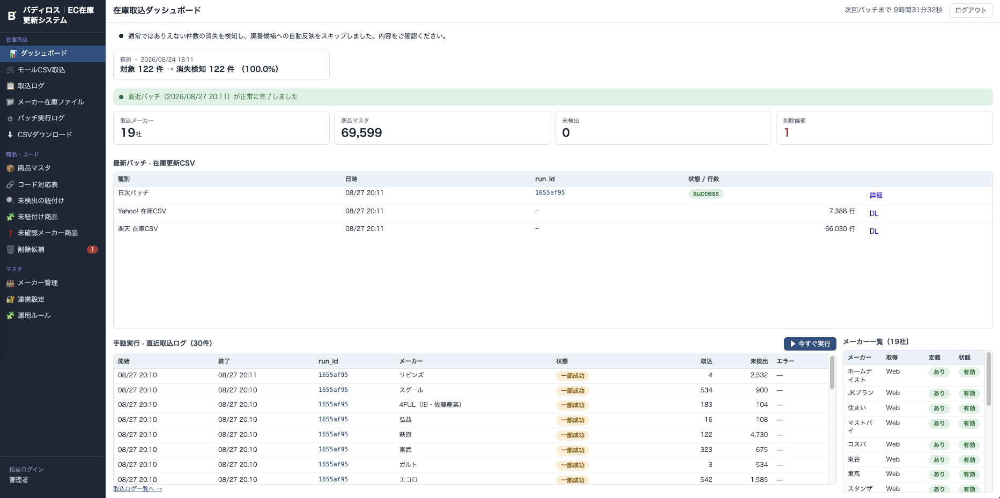
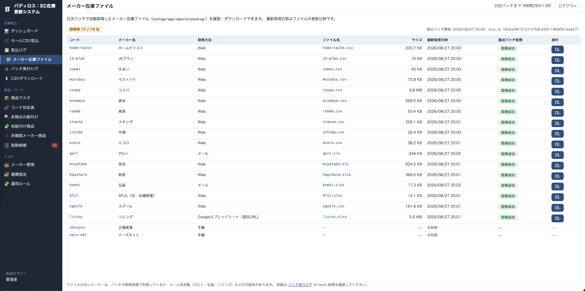
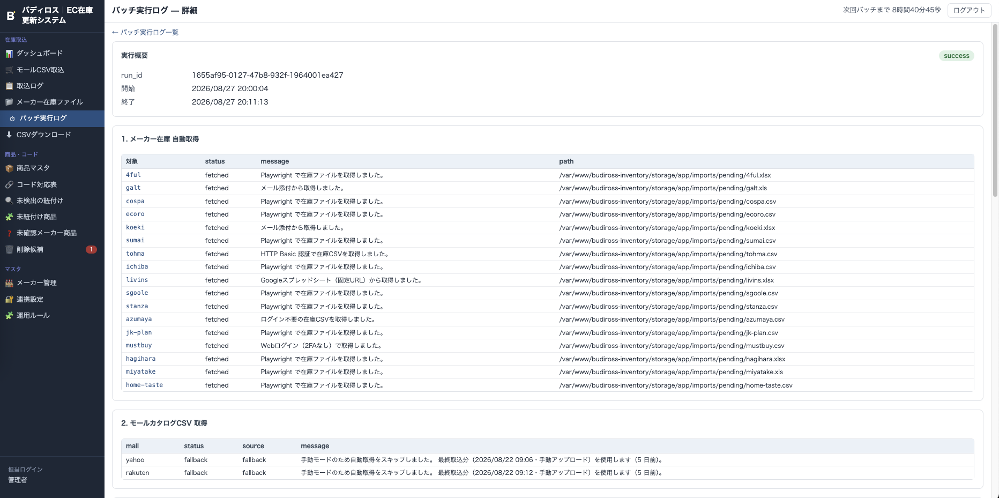
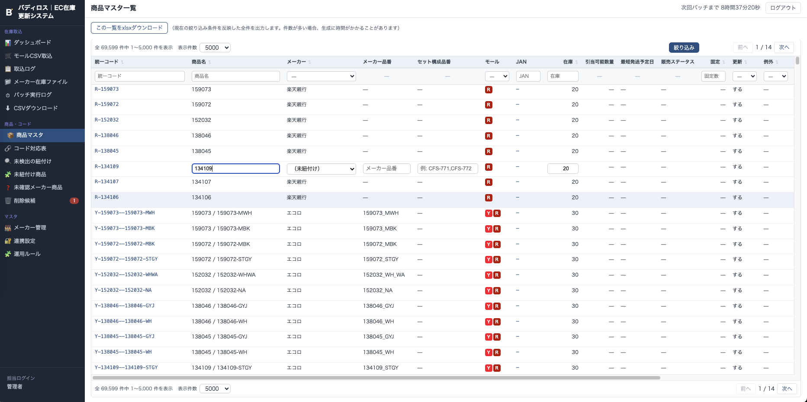
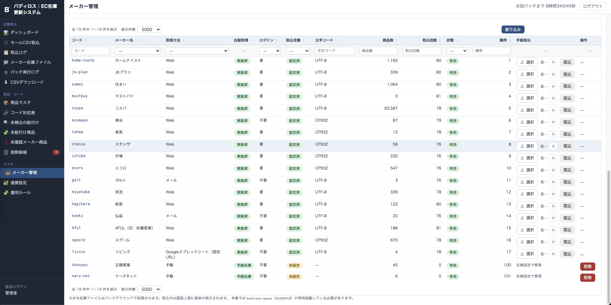

作品一覧へ戻る
家具・インテリアEC向け 複数モール在庫更新自動化システム
ドロップシッピング型ネットショップ向けに、複数メーカーの在庫データを取り込み、Yahoo!ショッピング／楽天市場用の在庫更新CSVを自動生成する管理システム。取込基盤・日次バッチ・管理画面・本番デプロイまで一人で担当。





概要
ドロップシッピング型ネットショップ向けに、複数メーカーの在庫データを取り込み、Yahoo!ショッピング／楽天市場用の在庫更新CSVを自動生成する管理システムを開発。Laravelモノリスで取込基盤・日次バッチ・管理画面・本番デプロイまでを設計〜インフラを一人で担当して実装しました。
技術的課題
- メーカーごとにCSV／Excelの列構成・文字コード・在庫表現（数値／記号／文言）が異なるため、取込定義ドリブンで形式差を吸収する設計が必要だった
- Yahoo!／楽天で商品コードが不統一なうえ、旧コード対応表（約7.9万行）を含むJAN軸マッチングと未検出の手動紐付け補完が必要だった
- メーカーWeb取得（Playwright）、メール（IMAP）、楽天SFTPなど取得経路が混在し、日次バッチ全体をキュー非同期で安定実行する必要があった
主な担当
- メーカー別取込定義＋League CSV／PhpSpreadsheetによるCSV・Excel取込エンジンを設計・実装（大量行時のメモリ最適化含む）
- JAN優先の商品マッチング、旧コード変換、未検出候補提示／手動紐付け画面を実装
- Playwrightによるメーカー／Yahoo!在庫取得、IMAPメール取込、楽天SFTP取得をオーケストレーションし、毎日20:00（JST）の日次バッチへ統合
- Yahoo!（UTF-8）／楽天（Shift-JIS・親行とSKU行の出し分け）向け在庫更新CSV生成と管理画面（ダッシュボード・運用ルール・廃番検知）を実装
- GitHub Actions＋rsyncによるAWS（EC2／RDS MySQL）への自動デプロイ、systemdキューワーカー連携を構築
成果
- AWS（EC2・RDS MySQL）上への本番デプロイ構成を整備し、メーカー17社の取込定義と日次バッチ／管理画面までを実装
- 本番稼働開始は2026年8月1日